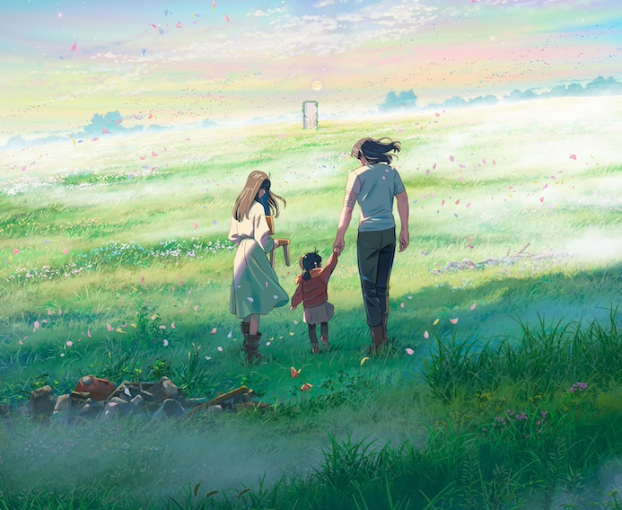

💖 Suzume no Tojimari sorti en 2023
Film d’animation de Makoto Shinkai.
Résumé
Un matin, Suzume croise un voyageur sur le chemin du lycée. Il lui demande où il y a des ruines. Il est à la recherche d’une porte. Suzume lui indique les montagnes, mais alors qu’ils partent chacun de leur côté, elle est persuadée d’avoir déjà vu ce jeune homme. Elle décide de le suivre. Dans les décombres d’un village abandonné, elle découvre une porte dressée, solitaire. Elle l’ouvre et voit, de l’autre côté, un monde tout autre, parsemé d’étoiles et de lumières colorées. Un monde dont elle a déjà rêvé.
Elle ne parvient cependant pas à y entrer et trébuche sur une petite statue, plantée dans le sol. Elle l’extrait. La statue se change en animal et s’enfuit. Prenant peur, Suzume retourne au lycée. Une alerte au séisme est déclenchée et Suzume voit un monstre énorme s’élever de la montagne. Personne d’autre ne semble le remarquer. Elle sait qu’il vient de l’endroit où elle a vu la porte, et qu’il va causer une catastrophe. Elle y retourne donc et découvre que le jeune homme qu’elle a rencontré le matin essaie désespérément de refermer la porte sur le monstre. Comprenant qu’elle a sans doute libéré la créature, Suzume apporte son aide à l’inconnu.
Ce jeune homme s’appelle Souta. Il est « Fermeur », c’est-à-dire qu’il veille à ce que les portes menant vers l’Au-Delà restent closes, afin d’empêcher le Ver de sortir et de s’écraser sur le monde des humains, causant des tremblements de terre. La statue que Suzume a déplacé était une clé permettant de sceller le monstre. Il y a en deux dans tout le Japon. Souta doit retrouver la clé pour éviter une catastrophe. Après s’être laissé soigné par Suzume – il a été blessé alors qu’ils refermaient la porte –, Souta doit repartir en mission. C’est sans compter sur la malédiction qui lui est lancé par un petit chat, qui le transforme en chaise.
Suzume et Souta, devenu une chaise pour enfant à trois pieds, s’embarquent alors dans une aventure folle pour rattraper le chat, annuler le maléfice et refermer toutes les portes. Le chat s’avère être la clé échappée, mais aussi leur guide, qui les conduit aux portes ouvertes et qui tente de faire comprendre à Souta qu’il est devenu la nouvelle clé pour sceller le Ver.
Suzume s’attache à Souta et ne supporte pas de le laisser se sacrifier. Elle fera tout pour entrer dans l’Au-Delà, récupérer la chaise et ramener Souta. Elle compte devenir elle-même la clé. Touché par leur amour, le chat redevient la statue et ensemble, ils parviennent à neutraliser le Ver. Suzume comprend alors ses rêves et ce qui lui est arrivée quand elle était enfant, après la mort de sa mère dans un tsunami. Elle était déjà venue dans l’Au-Delà et s’était vue elle-même, plus âgée. C’était la Suzume qui venait de contenir le Ver qui avait donné la petite chaise à la Suzume enfant, à la recherche de sa mère, mais surtout d’un moyen de faire son deuil.
Finalement, Suzume et Souta retournent dans le monde des humains et Souta reprend sa mission, promettant à Suzume de venir la retrouver ensuite, ce qu’il fait.
Ce que j’en pense
MA-GNI-FI-QUE. Après avoir vu Kimi no Na Wa et Tenki no Ko de Makoto Shinkai, j’ai reconnu la touche poétique et folklorique de l’histoire et du dessin. L’image est tellement belle, les couleurs, les lumières, etc. Et les personnages si touchants, si amusants, la magie palpable. C’est extraordinaire.
L’ambiance est pesante, prenante, la musique nous transporte (j’ai tout de suite reconnu les titres de RADWIMPS, ce qui ne m’a pas trop surprise pour un film de Makoto Shinkai). L’enjeu est capital, la mission des personnages nous prend aux tripes. Je suis restée cramponnée à mon siège presque tout du long. Tout est parfaitement dosé : l’aventure, l’action, la douceur, l’humour, la peine, l’amour. Il peut y avoir des moments extrêmement intenses où l’on se sent oppressé, comme pris dans un étau, en manque de souffle, dans l’attente de la fermeture de cette satanée porte; et pourtant, à d’autres moments, tout semble léger, doux et amusant, comme ces passages où l’ami de Souta chante dans la voiture, où Suzume fait des rencontres, ou bien ceux où elle garde Souta-chaise tout à côté d’elle, pour qu’il participe aux moments de détente en sa compagnie. C’est cette bienveillance et ce lien spécial entre eux qui permettront à Souta de rester accroché à son esprit et à son âme, de ne pas se perdre et de pouvoir revenir quand Suzume le supplie. C’est l’amour qui les raccrochent tous les deux à la vie. Il n’y a rien de plus beau.
Bref, un gros coup de cœur pour Suzume no Tojimari qui est bien meilleur que ses deux prédécesseurs. Changer le héros en chaise pour enfant, si petite, un peu amochée et que Suzume peut garder tout contre son cœur… Cela relève du génie à mon avis. Ce film est un chef-d’œuvre. Bravo Makoto !